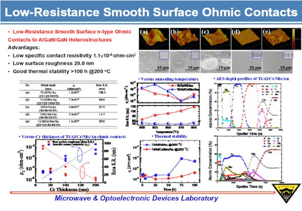
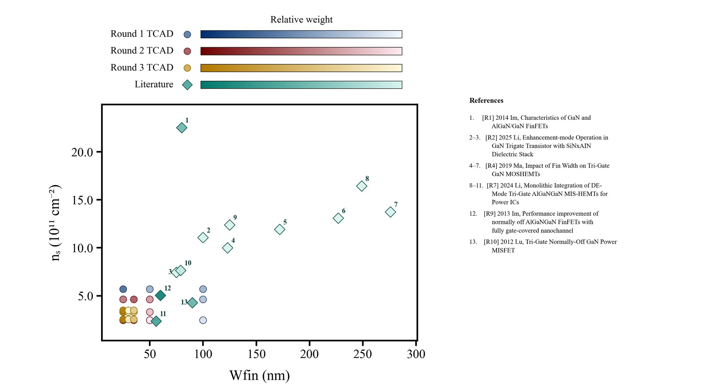
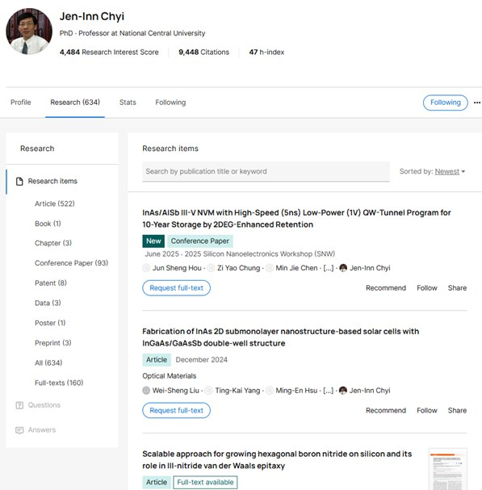

GaN Semiconductor Research Hub
Public-facing research notes and ChyiLab materials around GaN devices, ohmic contacts, and microwave/optoelectronic device work.
Open siteCurrent focus
My work sits at the intersection of GaN power semiconductor research, Python/MATLAB data analysis, ML-assisted TCAD planning, and EDA workflow automation. I like systems that are physical enough to be trusted and software-shaped enough to be reused.
Research
My graduate research explores GaN device design through a loop of physics assumptions, TCAD simulation, measurement-style metrics, and literature benchmarking. Recent work focuses on narrow-fin tri-gate structures, threshold voltage, breakdown voltage, on-resistance, and 2DEG sheet-density modeling against published GaN HEMT data.

Development

Public-facing research notes and ChyiLab materials around GaN devices, ohmic contacts, and microwave/optoelectronic device work.
Open site
A planning assistant for GaN/nitride TCAD optimization: data ingestion, surrogate modeling, physical constraints, and next-round parameter grids.
Private research prototypeAI-assisted photomask layout editor for GaN process research, turning natural-language commands into checked GDS/DXF operations.
GDS · DXF · rule checkingRepeatable LTspice workflow: build netlists, run headless simulations, parse waveform data, verify numbers, and write analysis documents.
GitHub repoScripted Cadence IC618/Spectre automation through SSH, SKILL, and OCEAN for reliable schematic creation and simulation runs.
GitHub repoAutomated GaN intelligence pipeline that tracks news, papers, company updates, and stocks, then summarizes signals into reports.
GitHub repoSkills
GaN HEMT, p-GaN process analysis, tri-gate/narrow-fin devices, TCAD, measurement interpretation.
Cadence Virtuoso/Spectre, LTspice, KLayout, GDS/DXF workflows, photomask rule checking.
Python, MATLAB, FastAPI, data pipelines, plotting, LLM-assisted agents, automation scripts.
Turning research steps into reusable tools with clear inputs, verification, documentation, and deployment.
Life
Away from simulation runs and paper notes, I like cycling, visual thinking, building small tools, following technology markets, and keeping a notebook full of half-formed ideas until one of them becomes a real project.
Contact